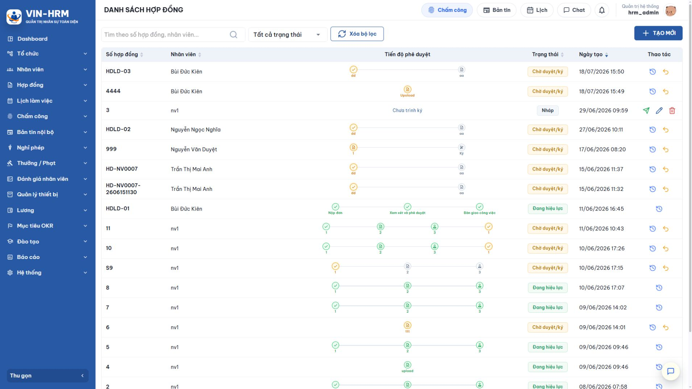
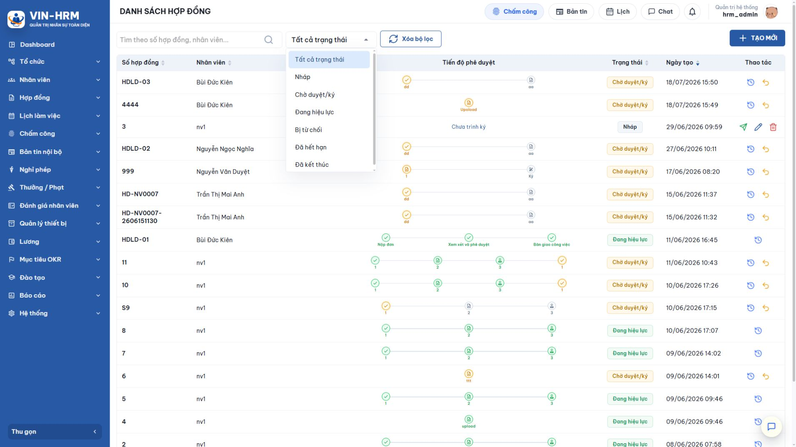
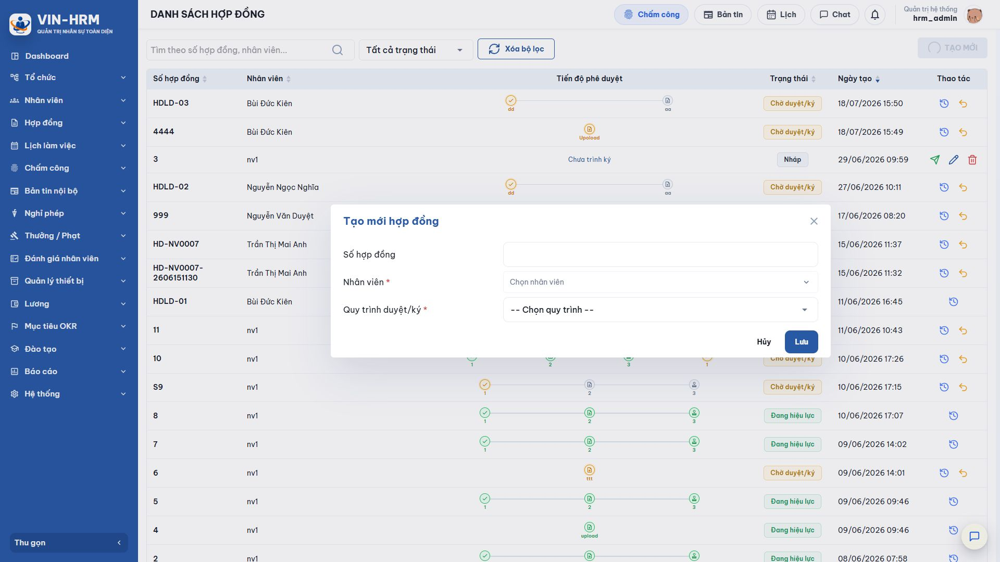
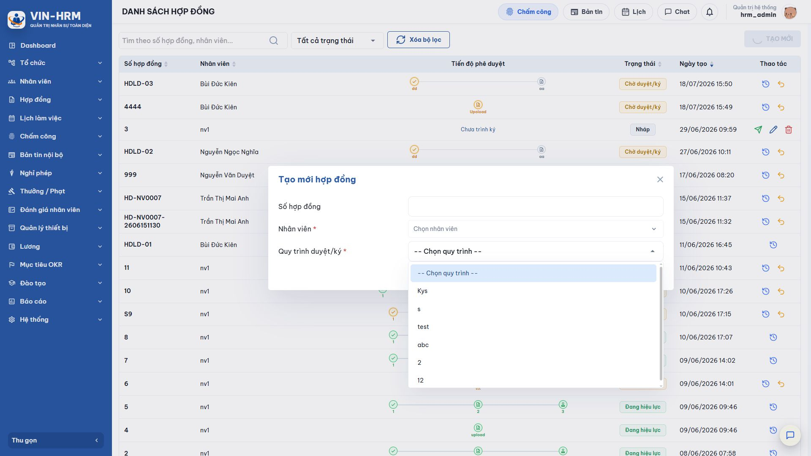
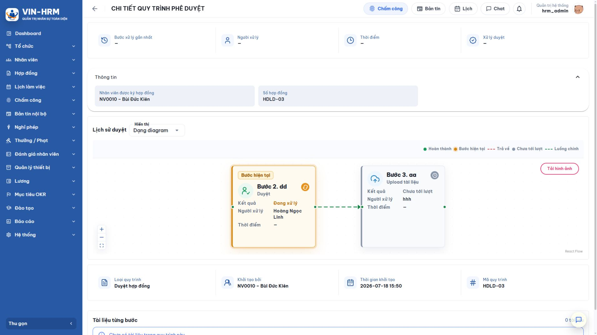
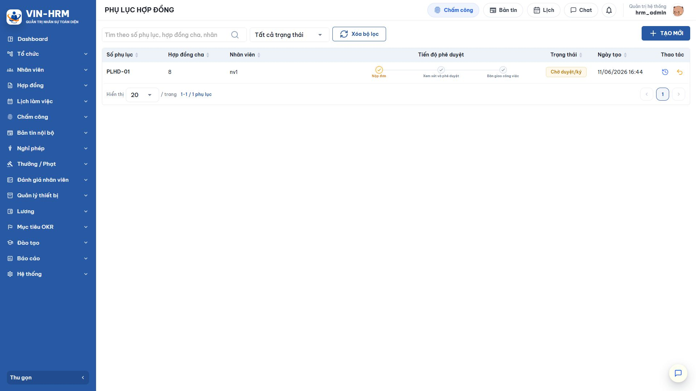
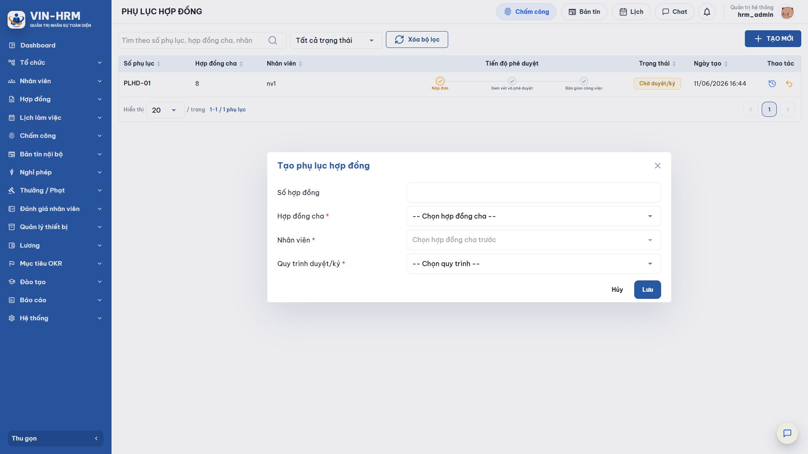
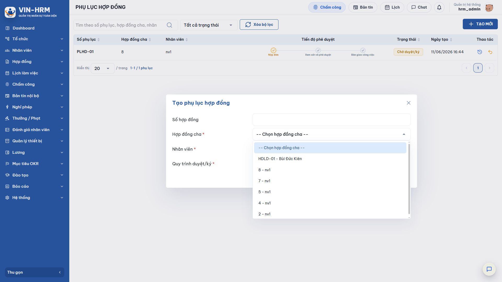
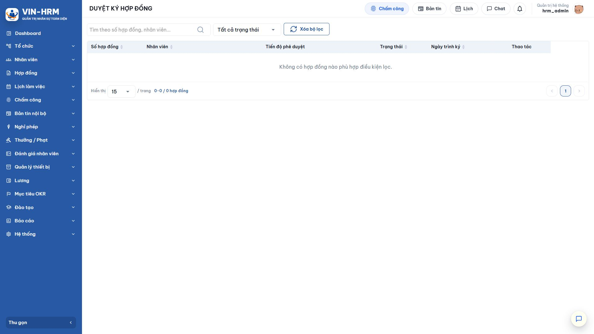
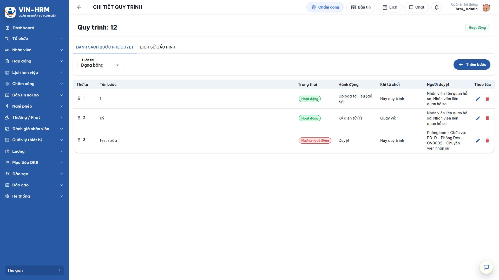

1. Mục đích và phạm vi
Chức năng Hợp đồng của VIN-HRM quản lý hồ sơ hợp đồng lao động và phụ lục, gắn hồ sơ với nhân viên, kiểm soát quy trình duyệt/ký, lưu tiến độ và tập hợp các tài liệu hoàn tất. Hợp đồng chính và phụ lục dùng chung cơ chế phê duyệt, nhưng phụ lục bắt buộc phải tham chiếu một hợp đồng chính đang hiệu lực.
Ở phiên bản được mô tả trong tài liệu này, biểu mẫu quản lý chỉ lưu các thông tin nhận diện và điều phối quy trình: số hợp đồng, nhân viên, hợp đồng cha đối với phụ lục và quy trình duyệt/ký. Các điều khoản như loại hợp đồng, ngày bắt đầu, ngày hết hạn, chức danh, nơi làm việc, lương, phụ cấp hoặc nội dung sửa đổi chưa phải là trường dữ liệu nhập trực tiếp trên màn hình này. Những nội dung đó cần được thể hiện trong tài liệu được tải lên và xử lý tại các bước của quy trình.
2. Mối quan hệ giữa hợp đồng, phụ lục và quy trình
| Thành phần | Ý nghĩa và quan hệ |
|---|---|
| Hợp đồng chính | Hồ sơ gốc của một nhân viên. Sau khi hoàn tất quy trình, trạng thái chuyển sang Đang hiệu lực và có thể được chọn làm hợp đồng cha của phụ lục. |
| Phụ lục hợp đồng | Hồ sơ bổ sung cho một hợp đồng chính. Phụ lục dùng cùng nhân viên với hợp đồng cha, có số riêng và có thể sử dụng một quy trình duyệt/ký riêng. |
| Quy trình duyệt/ký | Quy định thứ tự các bước, người xử lý, hành động tại từng bước và cách xử lý khi từ chối. Chỉ quy trình loại “Duyệt hợp đồng” đang hoạt động mới xuất hiện để chọn. |
| Tài liệu từng bước | File được tải lên, ký điện tử hoặc ký số trong quá trình xử lý. Khi quy trình hoàn tất, bản tài liệu cuối của mỗi nhánh ký được sao lưu vào hồ sơ hợp đồng/phụ lục. |
3. Quyền truy cập và phạm vi dữ liệu
| Quyền/chủ thể | Phạm vi sử dụng |
|---|---|
| Quản lý hợp đồng | Cho phép mở Danh sách hợp đồng và Phụ lục hợp đồng, tìm kiếm, tạo và xử lý hồ sơ. Phạm vi nhân viên được giới hạn theo phòng ban mà tài khoản được phân quyền. |
| Duyệt hợp đồng | Cho phép mở Duyệt ký hợp đồng. Danh sách công việc được xác định theo người xử lý của bước quy trình, không bị lọc theo phạm vi phòng ban của quyền quản lý hợp đồng. |
| Nhân viên liên quan hồ sơ | Nếu bước hiện tại được cấu hình cho “Nhân viên liên quan hồ sơ”, nhân viên có thể xử lý từ màn hình Hợp đồng của tôi. |
| Nhân viên được chọn | Phải đang hoạt động và thuộc phạm vi quản lý của người tạo. Nhân viên đã ngừng hoạt động không thể được dùng để tạo hoặc cập nhật hợp đồng. |
Đường dẫn sử dụng: mở nhóm Hợp đồng trên thanh chức năng, sau đó chọn Danh sách hợp đồng, Phụ lục hợp đồng, Duyệt ký hợp đồng hoặc Hợp đồng của tôi tùy vai trò.
4. Quản lý danh sách hợp đồng

4.1. Bộ lọc và sắp xếp
| Thành phần | Cách sử dụng |
|---|---|
| Tìm theo số hợp đồng, nhân viên | Nhập toàn bộ hoặc một phần số hợp đồng/tên nhân viên. Hệ thống tự tìm sau khi người dùng ngừng nhập trong thời gian ngắn; cũng có thể nhấn Enter hoặc chọn biểu tượng kính lúp. |
| Tất cả trạng thái | Chọn một trạng thái để thu hẹp danh sách. Ý nghĩa đầy đủ của từng lựa chọn được giải thích tại mục 7. |
| Xóa bộ lọc | Xóa từ khóa, đưa trạng thái về Tất cả và trở lại trang đầu. |
| Tiêu đề cột | Có thể sắp xếp theo Số hợp đồng, Nhân viên, Trạng thái hoặc Ngày tạo. Chọn lại tiêu đề để đổi chiều tăng/giảm hoặc bỏ sắp xếp. |
| Hiển thị / trang | Chọn số dòng mỗi trang và sử dụng nút chuyển trang. Mặc định danh sách hợp đồng hiển thị 20 dòng/trang. |
4.2. Ý nghĩa các cột
| Cột | Ý nghĩa |
|---|---|
| Số hợp đồng | Mã nhận diện duy nhất trong doanh nghiệp. Số có thể được nhập thủ công hoặc được hệ thống sinh tự động. |
| Nhân viên | Người được gắn với hợp đồng. Thông tin này cũng được dùng khi quy trình có bước dành cho “Nhân viên liên quan hồ sơ”. |
| Tiến độ phê duyệt | Hiển thị các bước của quy trình. Màu xanh thể hiện bước đã hoàn thành, màu vàng là bước đang xử lý, màu xám là bước chưa tới lượt; “Chưa trình ký” nghĩa là hồ sơ vẫn ở trạng thái Nháp. |
| Trạng thái | Thể hiện vòng đời của hợp đồng, không phải trạng thái xử lý riêng của từng người duyệt. |
| Ngày tạo | Thời điểm hồ sơ được tạo trên hệ thống, hiển thị theo định dạng ngày/tháng/năm và giờ:phút. |
| Thao tác | Các biểu tượng thay đổi theo trạng thái. Hợp đồng Nháp có Trình ký, Sửa, Xóa; Chờ duyệt/ký có Xem quy trình và Thu hồi; hồ sơ đã có quy trình có biểu tượng lịch sử. |
4.3. Bộ lọc trạng thái

5. Tạo hợp đồng

5.1. Các bước thực hiện
- Mở Hợp đồng > Danh sách hợp đồng.
- Chọn TẠO MỚI. Hệ thống tải các quy trình loại Duyệt hợp đồng đang hoạt động.
- Nhập Số hợp đồng hoặc để trống nếu muốn hệ thống tự sinh.
- Chọn Nhân viên. Có thể tìm theo mã hoặc họ tên; danh sách chỉ gồm nhân viên đang hoạt động và thuộc phạm vi được quản lý.
- Chọn Quy trình duyệt/ký.
- Chọn Lưu. Hợp đồng được tạo ở trạng thái Nháp; thao tác này chưa gửi cho người duyệt.
5.2. Ý nghĩa và quy tắc từng trường
| Trường | Ý nghĩa, lựa chọn và kiểm tra |
|---|---|
| Số hợp đồng | Không bắt buộc, tối đa 100 ký tự. Nếu nhập, hệ thống loại bỏ khoảng trắng ở đầu/cuối và chuyển thành chữ in hoa. Số phải duy nhất trong toàn doanh nghiệp, kể cả giữa hợp đồng chính và phụ lục. |
| Để trống Số hợp đồng | Hệ thống sinh số tuần tự với tiền tố HDLD, ví dụ HDLD-01, dựa trên các số đã tồn tại có cùng tiền tố. |
| Nhân viên * | Bắt buộc. Chỉ được chọn nhân viên đang hoạt động. Nếu người tạo không có quyền quản lý phòng ban của nhân viên, hệ thống từ chối lưu. |
| Quy trình duyệt/ký * | Bắt buộc. Chỉ liệt kê quy trình loại Duyệt hợp đồng đang hoạt động. Quy trình phải còn hợp lệ: người duyệt, phòng ban hoặc chức vụ dùng trong các bước không được ngừng hoạt động và bước đầu phải xác định được người xử lý. |
| Chỉ có một quy trình | Nếu hệ thống chỉ trả về đúng một quy trình phù hợp, biểu mẫu tự chọn quy trình đó. Người dùng vẫn cần kiểm tra tên trước khi lưu. |
| Số hợp đồng là mã hồ sơ, không phải nội dung hợp đồng Các điều khoản, ngày hiệu lực, mức lương và nội dung pháp lý phải được soạn trong file hợp đồng. File được đưa vào quy trình tại bước Tải tài liệu và tiếp tục qua các bước ký nếu quy trình có cấu hình. |
5.3. Chọn quy trình duyệt/ký

Tên quy trình nên phản ánh đúng đối tượng hoặc luồng áp dụng, ví dụ quy trình hợp đồng cho khối văn phòng, quy trình có ký điện tử hoặc quy trình yêu cầu tải bản đã ký. Khi có nhiều lựa chọn, người tạo cần kiểm tra danh sách bước ở Hệ thống > Quy trình phê duyệt; không nên chọn theo tên gần giống nếu chưa biết người duyệt và hành động bên trong.
6. Sửa, xóa, trình ký và thu hồi
6.1. Sửa hợp đồng
Chỉ hợp đồng ở trạng thái Nháp mới có biểu tượng bút và được phép cập nhật. Chọn biểu tượng bút, sửa Số hợp đồng, Nhân viên hoặc Quy trình duyệt/ký rồi chọn Lưu. Hệ thống thực hiện lại toàn bộ kiểm tra về số trùng, nhân viên đang hoạt động, phạm vi quyền và tính hợp lệ của quy trình.
6.2. Xóa hợp đồng
Chỉ hợp đồng Nháp mới có biểu tượng thùng rác. Chọn biểu tượng, đọc số hợp đồng trong thông báo xác nhận rồi chọn Xác nhận. Thao tác xóa loại bỏ hồ sơ khỏi danh sách; cần dùng cẩn thận vì mục đích của nút này là xử lý hồ sơ nháp tạo nhầm.
6.3. Trình ký
- Tại dòng hợp đồng Nháp, chọn biểu tượng máy bay giấy màu xanh lá.
- Đọc thông báo: sau khi trình ký, hợp đồng không được chỉnh sửa.
- Chọn Trình ký. Hệ thống kiểm tra lại quy trình, tạo một phiên xử lý, xác định người của bước đầu và gửi thông báo cho người xử lý.
- Trạng thái chuyển thành Chờ duyệt/ký; tiến độ hiển thị bước hiện tại.
6.4. Thu hồi trình ký
Khi hợp đồng đang Chờ duyệt/ký, chọn biểu tượng mũi tên quay lại màu vàng. Nếu xác nhận Thu hồi, hệ thống đưa hồ sơ về Nháp, xóa phiên quy trình hiện tại, xóa thông tin thời điểm/người trình và kết quả duyệt đang gắn với phiên đó. Sau khi chỉnh sửa, người dùng có thể trình ký lại để tạo một phiên quy trình mới.
| Thu hồi làm mất tiến trình hiện tại Toàn bộ lịch sử bước của phiên đang chạy bị loại bỏ cùng phiên quy trình. Chỉ thu hồi khi cần sửa hồ sơ hoặc chọn lại quy trình; không dùng Thu hồi chỉ để nhắc người duyệt. |
7. Hiểu đúng các trạng thái hợp đồng
| Trạng thái | Ý nghĩa | Thao tác quản lý hiện có |
|---|---|---|
| Nháp | Hồ sơ đã lưu nhưng chưa tạo phiên phê duyệt. Có thể sửa nội dung nhận diện hoặc đổi quy trình. | Trình ký, Sửa, Xóa. |
| Chờ duyệt/ký | Hồ sơ đang chạy qua các bước của quy trình. Bước hiện tại có thể là Duyệt, Tải tài liệu, Ký điện tử hoặc Ký số. | Xem quy trình, Thu hồi. |
| Đang hiệu lực | Tất cả bước bắt buộc đã hoàn tất. Hợp đồng chính ở trạng thái này được phép làm hợp đồng cha của phụ lục. | Xem quy trình; không sửa/xóa. |
| Bị từ chối | Một bước được phép từ chối đã kết thúc quy trình. Lý do từ chối được lưu cùng kết quả xử lý. | Phiên bản hiện tại không hiển thị nút sửa/trình lại trên danh sách quản lý. |
| Đã hết hạn | Trạng thái dùng để biểu thị hợp đồng đã qua thời hạn hiệu lực. | Hỗ trợ hiển thị và lọc; màn hình hiện tại không có nút chuyển thủ công. |
| Đã kết thúc | Trạng thái dùng cho hợp đồng đã chấm dứt trước thời hạn hoặc đã được kết thúc theo nghiệp vụ. | Hỗ trợ hiển thị và lọc; màn hình hiện tại không có nút chuyển thủ công. |
| Phân biệt trạng thái hồ sơ và trạng thái công việc của người duyệt “Chờ duyệt/ký” là trạng thái chung của hợp đồng. Trên màn hình Duyệt ký, “Chờ xử lý” hoặc “Đã xử lý” là trạng thái công việc của riêng tài khoản đang đăng nhập. Hai loại trạng thái không thay thế cho nhau. |
7.1. Xem tiến độ và lịch sử quy trình

Chọn biểu tượng lịch sử màu xanh tại dòng đã có quy trình. Màn hình chi tiết hiển thị thông tin hồ sơ và sơ đồ bước. Có thể đổi trường Hiển thị giữa dạng sơ đồ/bảng nếu hệ thống cung cấp lựa chọn, mở từng bước để xem hành động, kết quả, nhận xét, người xử lý, thời điểm và file đính kèm.
Chú giải sơ đồ: Hoàn thành là bước đã xử lý; Bước hiện tại là bước đang chờ hành động; Chưa tới lượt là bước sẽ mở sau; Trả về biểu thị nhánh quay lại khi một bước từ chối; Luồng chính là đường xử lý bình thường.
8. Quản lý phụ lục hợp đồng

8.1. Điểm khác so với hợp đồng chính
| Nội dung | Quy tắc của phụ lục |
|---|---|
| Hợp đồng cha | Bắt buộc. Chỉ chọn được hợp đồng chính đang hiệu lực; không được chọn một phụ lục làm cha của phụ lục khác. |
| Nhân viên | Không chọn độc lập. Hệ thống tự lấy nhân viên của hợp đồng cha và khóa trường này để tránh gắn sai người. |
| Số phụ lục | Dùng chung quy tắc duy nhất với Số hợp đồng. Nếu để trống, hệ thống tự sinh tiền tố PLHD. |
| Quy trình duyệt/ký | Bắt buộc và được chọn từ các quy trình Duyệt hợp đồng đang hoạt động. Có thể chọn quy trình khác với hợp đồng cha nếu quy định nội bộ cho phép. |
| Vòng đời | Dùng các trạng thái Nháp, Chờ duyệt/ký, Đã hiệu lực, Từ chối, Hết hạn và Đã kết thúc; quy tắc sửa/xóa/trình/thu hồi giống hợp đồng chính. |
| Xem phụ lục | Biểu tượng con mắt mở tài liệu kết quả khi hồ sơ đã có file. Nếu chưa có file, biểu tượng không tạo ra tài liệu thay thế. |
8.2. Tìm kiếm và đọc danh sách
Ô tìm kiếm hỗ trợ Số phụ lục, Số hợp đồng cha và tên nhân viên. Có thể lọc trạng thái, xóa bộ lọc và sắp xếp theo Số phụ lục, Hợp đồng cha, Nhân viên, Trạng thái hoặc Ngày tạo. Cột Tiến độ phê duyệt và các biểu tượng thao tác có ý nghĩa giống danh sách hợp đồng.
8.3. Tạo phụ lục

- Mở Hợp đồng > Phụ lục hợp đồng và chọn TẠO MỚI.
- Nhập Số hợp đồng cho phụ lục hoặc để trống để tự sinh số PLHD-…. Nhãn trên biểu mẫu dùng chung chữ “Số hợp đồng”, nhưng trên danh sách được hiển thị là Số phụ lục.
- Chọn Hợp đồng cha. Danh sách hiển thị theo dạng “Số hợp đồng - Tên nhân viên”.
- Kiểm tra trường Nhân viên đã tự điền đúng theo hợp đồng cha.
- Chọn Quy trình duyệt/ký và chọn Lưu. Phụ lục được tạo ở trạng thái Nháp.
8.4. Các lựa chọn Hợp đồng cha

Nếu hợp đồng cần chọn không xuất hiện, kiểm tra lần lượt: đó có phải hợp đồng chính hay đã là phụ lục; trạng thái có phải Đang hiệu lực; hợp đồng có thuộc doanh nghiệp hiện tại; dữ liệu danh sách đã được tải lại sau khi hợp đồng vừa hoàn tất hay chưa. Không thể tạo phụ lục cho một hợp đồng đang Nháp, Chờ duyệt/ký, Bị từ chối, Đã hết hạn hoặc Đã kết thúc.
| Phụ lục chưa tự thay đổi dữ liệu nhân sự Việc phụ lục có hiệu lực xác nhận hồ sơ đã hoàn tất quy trình, nhưng biểu mẫu này không tự cập nhật lương, chức danh, phòng ban hoặc lịch làm việc. Nếu nội dung phụ lục làm thay đổi các thông tin đó, cán bộ nhân sự cần cập nhật ở đúng phân hệ nghiệp vụ theo quy định của doanh nghiệp. |
9. Duyệt, tải tài liệu và ký hợp đồng

9.1. Bộ lọc công việc
| Lựa chọn | Ý nghĩa |
|---|---|
| Chờ xử lý | Các hồ sơ mà tài khoản đang là người của bước hiện tại và chưa hoàn thành hành động. Đây là lựa chọn mặc định. |
| Đã xử lý | Các hồ sơ mà tài khoản đã thực hiện bước được giao. Hồ sơ có thể vẫn tiếp tục chờ những người ở bước sau. |
| Tất cả trạng thái | Kết hợp cả Chờ xử lý và Đã xử lý của tài khoản, không có nghĩa là xem mọi hợp đồng trong doanh nghiệp. |
9.2. Các hành động của bước quy trình
| Hành động | Ý nghĩa và cách xử lý |
|---|---|
| Duyệt | Người xử lý xem thông tin và tài liệu, sau đó xác nhận duyệt hoặc từ chối. Nếu là bước cuối và được duyệt, hợp đồng/phụ lục chuyển sang Đang hiệu lực. |
| Tải tài liệu | Người xử lý tải lên file cần dùng cho bước sau. Nếu bước được đánh dấu “để ký”, file này là nguồn cho bước Ký điện tử/Ký số. Bước Tải tài liệu không có hành động từ chối. |
| Ký điện tử | Người ký đặt hình ảnh chữ ký lên tài liệu PDF theo vị trí được chọn. Quy trình có thể chỉ định tài liệu của bước trước làm nguồn ký. |
| Ký số | Thực hiện ký bằng chứng thư số/cơ chế ký số được hệ thống hỗ trợ. Người dùng cần có công cụ hoặc thông tin ký số hợp lệ theo môi trường triển khai. |
Khi thực hiện hành động, đọc đúng số hợp đồng và tên nhân viên trên thông báo. Với Duyệt/Ký, kiểm tra file nguồn, nội dung, vị trí chữ ký và người ký. Nếu từ chối, nhập lý do cụ thể; lý do tối đa 500 ký tự và được lưu trong lịch sử quy trình.
9.3. Tài liệu kết quả
Khi quy trình hoàn tất, hệ thống tìm các bước Tải tài liệu, Ký điện tử và Ký số có file. Nếu một tài liệu tiếp tục được ký ở bước sau, hệ thống lấy bản ở bước cuối của chuỗi đó; sau đó sao chép các bản cuối vào kho file của hồ sơ hợp đồng. Vì vậy, file ở bước sau phải đúng nguồn và hoàn thành thành công để tài liệu cuối phản ánh đầy đủ chữ ký.
10. Cấu hình quy trình dùng cho hợp đồng

10.1. Vị trí cấu hình và phạm vi áp dụng
Mở Hệ thống > Quy trình phê duyệt. Tạo hoặc cập nhật quy trình với Loại quy trình: Duyệt hợp đồng, sau đó cấu hình các bước và đặt quy trình ở trạng thái Hoạt động. Cả hợp đồng chính và phụ lục đều sử dụng nhóm quy trình này.
Trong phiên bản hiện tại, cấu hình cũ có khóa ContractApprovalWorkflow theo cấp hệ thống, doanh nghiệp hoặc chi nhánh đã được loại bỏ. Quy trình không được tự chọn theo ba cấp cấu hình đó; người tạo chọn trực tiếp một quy trình trên từng hợp đồng/phụ lục. Vì vậy:
- Không cần tìm mục “Workflow duyệt hợp đồng” trong màn hình Cấu hình hệ thống/doanh nghiệp/chi nhánh.
- Một doanh nghiệp có thể duy trì nhiều quy trình Duyệt hợp đồng đang hoạt động để phục vụ các nhóm hồ sơ khác nhau.
- Không có cấu hình hợp đồng riêng theo chi nhánh trên biểu mẫu hiện tại. Việc phân tách có thể thực hiện bằng quyền phòng ban và quy ước đặt tên quy trình.
10.2. Các bước quy trình và ý nghĩa lựa chọn

| Cấu hình bước | Ảnh hưởng đến hợp đồng/phụ lục |
|---|---|
| Thứ tự | Xác định trình tự mở bước. Chỉ bước đang tới lượt mới cho người xử lý thực hiện. |
| Tên bước | Hiển thị trên tiến độ, lịch sử và thông báo. Nên đặt tên theo mục tiêu như “Nhân sự kiểm tra”, “Nhân viên ký”, “Giám đốc ký”. |
| Trạng thái bước | Chỉ bước Hoạt động được đưa vào phiên quy trình. Không dùng bước Ngừng hoạt động cho hồ sơ mới. |
| Hành động | Chọn Duyệt, Tải tài liệu, Ký điện tử hoặc Ký số. Tải tài liệu có thể được đánh dấu là tài liệu nguồn để ký. |
| Khi từ chối | Hủy quy trình: kết thúc và đưa hồ sơ sang Bị từ chối; Quay về bước…: đưa luồng trở lại bước được chọn để sửa/ xử lý lại. Bước Tải tài liệu không áp dụng từ chối. |
| Người duyệt | Có thể là người cụ thể, phòng ban + chức vụ hoặc Nhân viên liên quan hồ sơ tùy cấu hình. Tất cả đối tượng phải còn hoạt động để quy trình hợp lệ. |
| Tài liệu nguồn ký | Với Ký điện tử/Ký số, cần tham chiếu đúng bước đã tạo/tải file. Các bước Ký điện tử phải đứng trước Ký số trong cùng luồng. |
10.3. Kiểm tra trước khi cho phép chọn quy trình
- Loại quy trình là Duyệt hợp đồng và trạng thái là Hoạt động.
- Có ít nhất một bước hoạt động và bước đầu xác định được người xử lý.
- Người duyệt, phòng ban và chức vụ dùng trong bước vẫn đang hoạt động.
- Nếu dùng Nhân viên liên quan hồ sơ, nhân viên được chọn trên hợp đồng phải đang hoạt động.
- Bước Ký điện tử/Ký số tham chiếu đúng bước có file; thứ tự ký điện tử trước ký số.
- Đã chạy thử một hồ sơ nháp và kiểm tra thông báo đến đúng người.
11. Lỗi thường gặp và cách xử lý
| Hiện tượng/thông báo | Nguyên nhân và cách xử lý |
|---|---|
| Số hợp đồng đã tồn tại | Số bị trùng sau khi hệ thống chuẩn hóa thành chữ in hoa. Nhập một số khác hoặc để trống để hệ thống tự sinh. |
| Nhân viên không tồn tại/đã ngừng hoạt động | Kiểm tra đúng doanh nghiệp, trạng thái hồ sơ nhân viên và chọn lại từ danh sách hiện hành. |
| Bạn không có quyền quản lý hợp đồng của nhân viên này | Nhân viên nằm ngoài phòng ban được phân quyền. Liên hệ quản trị viên điều chỉnh phạm vi quyền hoặc giao người có quyền phù hợp thực hiện. |
| Quy trình duyệt/ký không tồn tại hoặc đang ngừng hoạt động | Quy trình đã bị ngừng sau khi hồ sơ nháp được tạo. Mở hồ sơ Nháp, chọn quy trình hoạt động khác và lưu. |
| Quy trình không hợp lệ do người duyệt/phòng ban/chức vụ ngừng hoạt động | Cập nhật các bước của quy trình, thay đối tượng xử lý đã ngừng hoạt động và kiểm tra lại bước đầu. |
| Chỉ có thể chỉnh sửa hoặc xóa hợp đồng Nháp | Hồ sơ đã trình ký. Nếu còn ở Chờ duyệt/ký và thực sự cần sửa, dùng Thu hồi; trạng thái khác không có nút sửa trong phiên bản hiện tại. |
| Chỉ có thể trình ký hợp đồng Nháp | Tải lại danh sách để lấy trạng thái mới nhất; không trình lặp một hồ sơ đang chạy hoặc đã hoàn tất. |
| Chỉ có thể thu hồi hợp đồng đang chờ duyệt | Hồ sơ đã được xử lý sang trạng thái khác hoặc vừa bị người khác thay đổi. Tải lại danh sách. |
| Hợp đồng cha không xuất hiện | Hợp đồng chưa Đang hiệu lực, đã là phụ lục hoặc không thuộc doanh nghiệp hiện tại. |
| Không thể tạo phụ lục cho một hợp đồng đã là phụ lục | Chọn hợp đồng chính gốc. Hệ thống không cho tạo chuỗi phụ lục lồng nhau. |
| File sau ký duyệt không tồn tại/không hợp lệ | File ở bước Tải tài liệu/Ký bị thiếu hoặc liên kết sai. Kiểm tra tài liệu từng bước và cấu hình nguồn ký trước khi hoàn tất lại quy trình. |
| Không thấy hồ sơ trong Duyệt ký hợp đồng | Kiểm tra bộ lọc Chờ xử lý/Đã xử lý/Tất cả; xác nhận tài khoản có quyền Duyệt hợp đồng và thực sự là người xử lý của bước hiện tại. |
12. Danh sách kiểm tra vận hành
- Đã phân quyền Quản lý hợp đồng cho cán bộ nhân sự và Duyệt hợp đồng cho người xử lý phù hợp.
- Nhân viên, phòng ban, chức vụ và người duyệt trong quy trình đều đang hoạt động.
- Quy trình được đặt đúng loại Duyệt hợp đồng, có tên dễ phân biệt và đã được chạy thử.
- Số hợp đồng/phụ lục không trùng; nếu dùng sinh tự động đã kiểm tra đúng tiền tố HDLD/PLHD.
- Trước khi trình ký đã kiểm tra đúng nhân viên và đúng quy trình vì hồ sơ sẽ bị khóa sửa.
- Trước khi ký đã kiểm tra tài liệu nguồn, phiên bản file, vị trí chữ ký và nội dung pháp lý.
- Sau bước cuối đã kiểm tra trạng thái Đang hiệu lực và mở được tài liệu kết quả.
- Với phụ lục đã kiểm tra đúng hợp đồng cha và cập nhật các phân hệ nhân sự khác nếu nội dung phụ lục làm thay đổi dữ liệu nghiệp vụ.